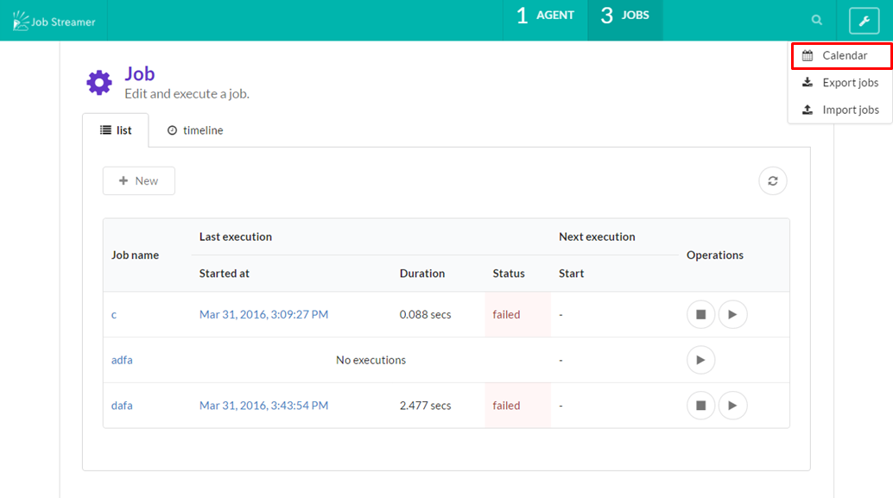
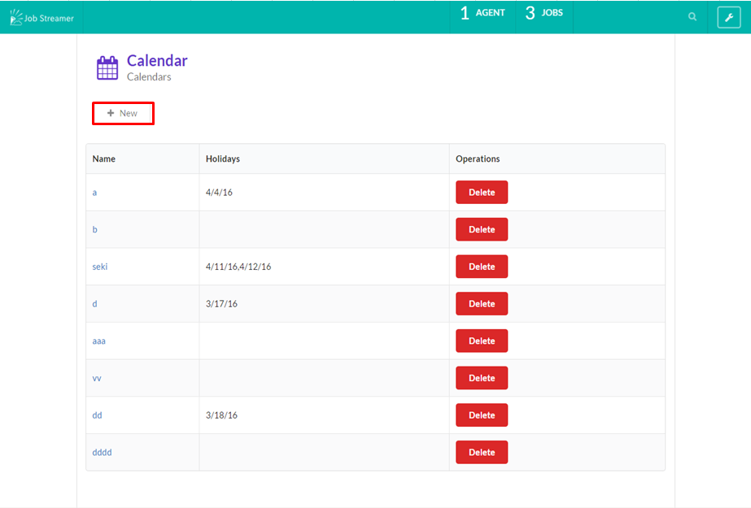
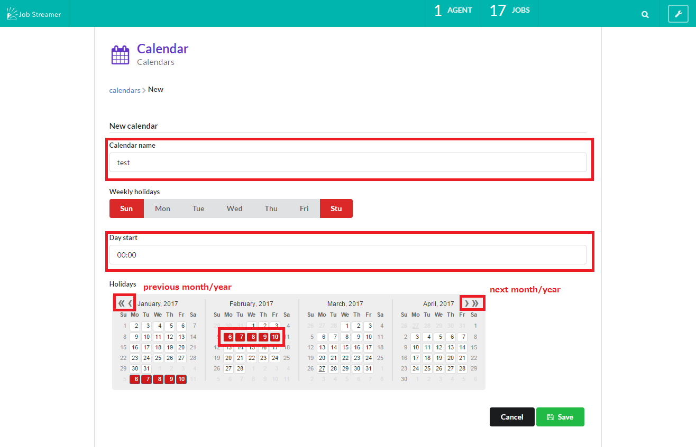

Schedule job
You can control automatic job execution using calendar and cron expressions.
How to regist calendar
You can specify job execute date by creating a calendar and associating it with a job.
1. Select “Calendar” from the pull-down menu at the header right menu.

2. Press “New” button on the calendar page.

3. Input information and create calendar.
Enter calendar name, select dates and press “Save” button to create calendar.
If the business date you want to set does not start at 00:00 (For example, a case where you needs to consider Jun/2/2017 01:00 as Jun/1/2017 25:00), enter the start time of the day in “Day start”.

4. Associate calendar with job.
It is necessary to associate a calendar to a job as following “How to regist schedule” in order to use calendar actually.
You can deter a job execution on dates not included in a calendar by setting calendar with cron expressions.
How to regist schedule
You can schedule a job execution by calendar and Quartz format (cron expressions).
1. Open the schedule edit view from the “Next” panel on the job detail page.

2. Easy creation of schedule.
You can construc a quartz format interactively on the “Next” panel.
2.1. Select schedule pattern from Daily or Weekly, Monthly.

2.2. Enter ignition time (hour).

2.3. Quartz format will be constructed and enterd in the form automatically.
Finally, the value of the Quartz format form will be submitted.
If you want to enter the Quartz format directly, enter it in the cron expressions format.

3. Associate calendar
Associate a calendar that that you registed in the “How to regist calendar” section with the schedule.

4. Regist schedule
When you regist the schedule by “Save” button, then automatic job execution starts.
It will fire at the date and time that match both its cron expression and its calendar.